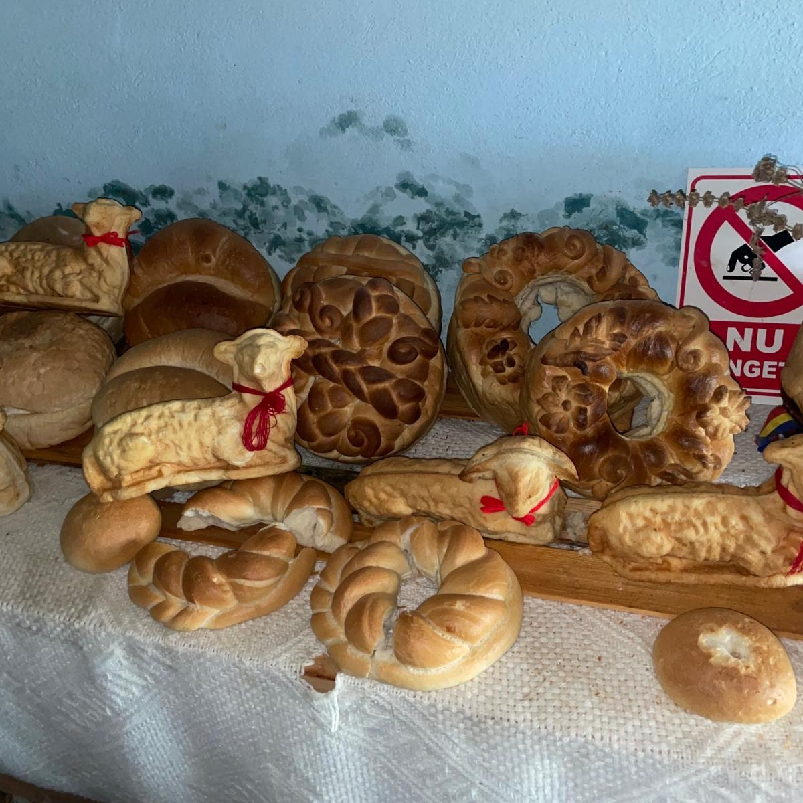

01.04.2024
episode
Outsiders: Skupina x mappa
April's mixtape opens with a melancholic, repetitive piano piece by Georgian sTia. Slovakia's Warm Winters Ltd. celebrate their fifth birthday with Prah, a compilation that tenderly maps the contemporary Slovak and Czech independent scene. Simina Oprescu's exploration of the relationship between materiality and sound is embodied in Sound of Matter I, in which the sound of bells gradually builds into a meditative dronescape. An introspective desire for mutual connection is expressed in Man Rei's pandemic-era piece. The selection is rounded off by new releases from Shakali, Tomáš Šenkyřík, Olga Anna Markowska, Áron Porteleki, buttechno and many more.
sTia - muted by default (CES Records, 2024)
Shakali - Ensisäie (Not Not Fun, 2024)
Tomáš Šenkyřík, Pavel Rajmic, Prokop Šenkyřík - Golden Path (Blue Lizard, 2024)
buttechno - angel's break (self-released, 2024)
Man Rei - Lossless Landmass, Avoidant Thought (Crash Symbols, 2024)
Jaroslav Kořán / Michal Kořán - Part 1 (Snivci, 2024)
Adela Mede - Horľavina (Warm Winters Ltd., 2024)
timmi - Ťažoba (Warm Winters Ltd., 2024)
Simina Oprescu - Sound of Matter I (Hallow Ground, 2024)
Olga Anna Markowska - Paul's Eyes (Kanu Kanu, 2024)
Viliam Solovic - Anse (self-released, 2024)
Shakali - Alin Nila (Not Not Fun, 2024)
Lénok - 01010000 01110010 01100101 00100000 01110100 01100101 01100010 01100001 (Warm Winters Ltd., 2024)
Jaroslav Kořán / Michal Kořán - Part 3 (Snivci, 2024)
Ján Števuliak - Nohy a Drôt a Nepríjemno (Warm Winters Ltd., 2024)
Áron Porteleki - B.L.S. (blindblindblind, 2024)
patole - město (self-released, 2024)